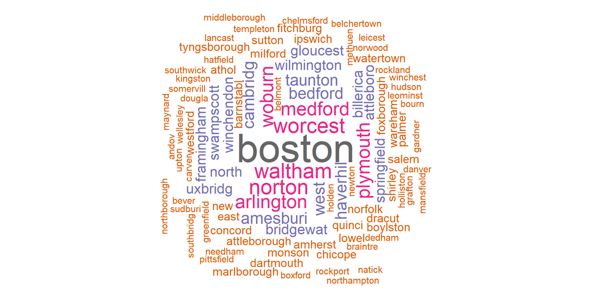

News & Events
Your Progress Report Questions Answered
This time of year we begin to receive questions about progress reports. Some are already worrying about what they will submit at the end of the year; others are being asked for a midyear report.
Progress reports written by the parent are an acceptable form of evaluation.
In Massachusetts, homeschooling parents, as the teachers of their children, are responsible for evaluating their progress. CARE AND PROTECTION OF CHARLES & others, 399 Mass. 324 (1987) clearly outlines three forms of evaluation: “Other means of evaluating the progress of the children may be substituted for the formal testing process, such as periodic progress reports or dated work samples, subject to the approval of the parents.” (Charles at 340) Parents may choose one of them to fulfill their responsibility. Read more >>
Homeschooling Fact Check: Materials and Resources
This week we continue our Homeschooling Fact Check
series in which we examine some of the most common questions we receive and some of the biggest myths about homeschooling in Massachusetts. If you have questions or topics you'd like to suggest for this series, you can email us at info@ahem.info.
Claim:
It is sufficient to give a very general list of materials in your education plan; your town isn't entitled to specific titles or the names of resources.
Reading the Law:
The Care and Protection of Charles says: Read more >>
The Year in Review from AHEM!
Please consider AHEM when you are making end-of-year charitable donations!
Support AHEM!
AHEM is a statewide nonprofit organization in Massacetts operating to support the grassroots strength of Massachusetts homeschoolers. We are here for YOU. We are not beholden to any other organization or agenda, and we do not limit our advocacy on the basis of age, race, family status, religious belief, or sexual orientation.
Donate via Paypal or with a credit card.
We are also happy to accept personal checks or money orders. Please make them out to "Advocates for Home Education in Massachusetts, Inc." and send them to the following address:
AHEM
PO Box 1307
Arlington, MA 02474
Advocates for Home Education in Massachusetts, Inc. is a 501(c)(3) charitable organization. Your gift to AHEM is tax-deductible to the extent allowable by law (and greatly appreciated).
Highlights of 2022
A trip down memory lane, or an opportunity to catch up on events and information you may have missed the first time around:
AHEM provided:
Virtual presentations
Getting Started Homeschooling in Weston in January and in Plainville in May and Homeschooling 101 in Plainville in June and in Seekonk in July.Articles clarifying homeschool policy and practice
Unsnarling Charles
Understanding Massachusetts homeschooling law is not a straightforward undertaking. Yet it is an important one. Once you understand your rights, you can stand up for them. Homeschooling in Massachusetts is a purely local undertaking, with each district performing oversight functions. (The Massachusetts Department of Elementary and Secondary Education has no authority to approve or disapprove homeschooling plans, and in fact, plays no role whatsoever in the implementation of homeschooling regulation in our state.) The following is our own interpretation of Charles's intent regarding issues such as prior approval, written approval, evaluation, mid-year changes, and testing, and does not constitute legal advice; it is for informational purposes only. Read more >>
Homeschooling High School FAQ
Reporting
If I am withdrawing my child from high school to homeschool, what do I need to do?
You can withdraw your child and begin homeschooling at any age and at any point in the school year. If your child is under 16, see Getting Started Homeschooling for how to submit an education plan.
If your child is 16 or older, you do not have to submit an education plan, but you should officially withdraw your child. If your child has done some high school, obtain a copy of their transcript when you withdraw.
My child turned 16 mid-year. Do I need to send in my end-of-year evaluation?
No. The day your child turns 16 you can be done reporting. Read more >>
Results of Education Plan Submission Survey
October 2022
Thanks to all who took time out of their day to fill out the survey. The survey collected data about the use of forms to submit education plans. 369 homeschoolers from half of all municipalities in Massachusetts responded.
